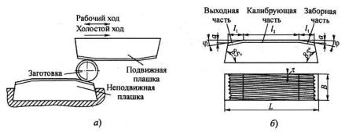
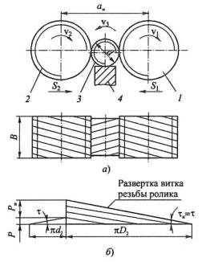
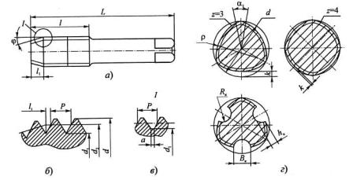
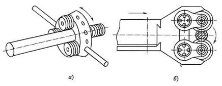

Накатывание резьбы представляет собой процесс холодного пластического деформирования поверхностных слоев заготовки. При этом деформируемый при большом давлении металл заполняет впадины между витками резьбы инструмента и таким образом на заготовке создается резьба без снятия стружки. Этот метод нашел широкое применение, особенно в массовом и крупносерийном производствах.
Резьбонакатные плоские плашки применяются для накатки наружных резьб различного профиля: метрических, упорных, трапецеидальных и др., а также различных видов шурупных резьб, червяков, рифлений, кольцевых и винтовых канавок на заготовках из пластичных материалов.
Плоские плашки применяются в виде комплекта из двух плашек. Одна плашка крепится неподвижно на столе станка, а вторая связана с ползуном станка и в процессе работы совершает возвратно-поступательное движение. При ходе влево подвижная плашка захватывает заготовку, подаваемую специальным механизмом станка, и прокатывает ее по неподвижной плашке.
На поверхностях плашек, обращенных друг к другу, нанесены (фрезерованием и шлифованием) развернутые витки резьбы с углом наклона к направлению движения, равным углу подъема накатываемой резьбы τ. При настройке операции витки подвижной и неподвижной плашек смещают вдоль оси заготовки относительно друг друга на половину шага резьбы (0,5Р) так, чтобы выступы витков подвижной плашки точно попадали во впадины витков неподвижной плашки.
Резьбонакатные ролики используют для накатывания наружных резьб. Этот процесс является более совершенным по сравнению с накатываниями плоскими плашками, хотя и значительно уступает ему по производительности (60... 80 шт./мин).
Ролики обеспечивают более точную резьбу, так как работают с малыми давлениями и, кроме того, резьба на роликах вышлифовывается с высокой точностью и малой шероховатостью поверхности. Установка и регулирование роликов на размер проще и точнее, чем плашек. Благодаря постепенной радиальной подаче роликов нагрузка на витки распределяется более равномерно, поэтому можно производить накатку резьбы даже на полых заготовках, а также на заготовках из малопластичных материалов. Ролики позволяют производить накатку резьб на заготовках диаметром от 2 до 60 мм, что значительно выше, чем плашками.
Как видно из схемы накатывания резьбы роликами, заготовка помещается между двумя роликами 1 и 2, которые в процессе накатки вращаются в одном направлении, а заготовка - в противоположном. Один из роликов (ведущий) получает вращение от привода станка и радиальную подачу по направлению к заготовке и другому ролику. В результате этого каждый ролик участвует витками своей резьбы в формировании резьбы заготовки.
Заготовка 3 устанавливается на опорную линейку 4 с напаянной твердосплавной пластиной, обеспечивающей линейке высокую износостойкость. Для того чтобы заготовку не выталкивало из контакта с роликами, ее ось располагают ниже линии центров роликов на величину 0,1...0,6 мм.
По окончании формирования резьбы подача прекращается, и при дальнейшем вращении роликов происходит калибрование резьбы.
Направление резьбы на роликах обратное накатываемой. По оси ролики смещены на полшага относительно друг друга так, что выступы витков одного ролика входят во впадины витков другого ролика. При вращении роликов осевое перемещение заготовки отсутствует. Поэтому можно накатывать резьбу на заготовках с буртиками и на конических поверхностях. Наличие осевого перемещения свидетельствует о погрешностях шага резьбы роликов, а попытки установить для заготовки упоры приводят к порче резьбы.
Накатники (раскатники) применяются для получения внутренних резьб. Они представляют собой стержни с нарезанной резьбой, соответствующей профилю накатываемой резьбы, с заборной и калибрующей частями и хвостовиком. Внешне они подобны метчикам, но, в отличие от них, не имеют стружечных канавок и, соответственно, режущих зубьев.
Формирование резьбы осуществляется также методом холодного пластического деформирования, но, в отличие от роликов и плашек, при этом имеет место не трение качения, а трение скольжения, вызывающее повышенный износ инструмента. По сравнению с метчиками накатники обладают большей прочностью, обеспечивают получение точных резьб с низкой шероховатостью поверхности, повышение прочности резьбы (до 20 %). Наибольшее применение они нашли в приборостроении при накатке резьбы в пластичных материалах, в листовых заготовках из цветных металлов с длиной резьбы меньше диаметра, а также при накатке резьбы в глухих отверстиях в вязких и мягких сталях.
Резьбонакатные головки используют для накатки наружных резьб на специальном или универсальном оборудовании и даже вручную. Они представляют собой сборный инструмент, использующий в качестве рабочих элементов ролики небольших диаметров, подобно резьбонарезным головкам. Имеется большое число вариантов конструктивного исполнения резьбонакатных головок. На рисунке приведены два варианта таких головок: с аксиальной (осевой) подачей заготовок и тангенциальной подачей головки.
При накатке резьбы на длине (2...3)Р в начале захода используют принудительную подачу, равную шагу резьбы. Затем подачу отключают, и процесс идет с самоподачей. Принудительная подача обычно приводит к снижению стойкости роликов.
Резьбонакатные головки используют для накатки метрических, трубных и трапециевидных резьб диаметром d = 12...90 мм с шагом до Р = 10 мм. Число роликов у крупных головок может доходить до 10.
На рисунке позиция (б) показана схема накатки резьбы с тангенциальной подачей головки, закрепленной на суппорте станка. Наибольшее применение нашли головки с двумя роликами. Они бывают как с синхронным (через зубчатую передачу), так и с несинхронным вращением роликов. Витки роликов винтовые, с направлением резьбы, обратным направлению резьбы заготовки, и с числом заходов, обеспечивающим равенство углов подъема резьбы на роликах и заготовке. Число заходов зависит от шага резьбы и находится в пределах i = 2...6. Оси роликов параллельны оси заготовки. Ширина роликов больше длины накатываемой резьбы на величину не менее одного шага. Профиль витков одного ролика смещен на Р/2 относительно профиля другого ролика.
В начальный момент ролики касаются наружной поверхности заготовки. Затем головке задается тангенциальная подача. Конец процесса накатывания резьбы наступает тогда, когда оси роликов окажутся в одной вертикальной плоскости с осью заготовки.
Резьбонакатные головки используются для накатки резьб диаметром d = 3…52 мм.